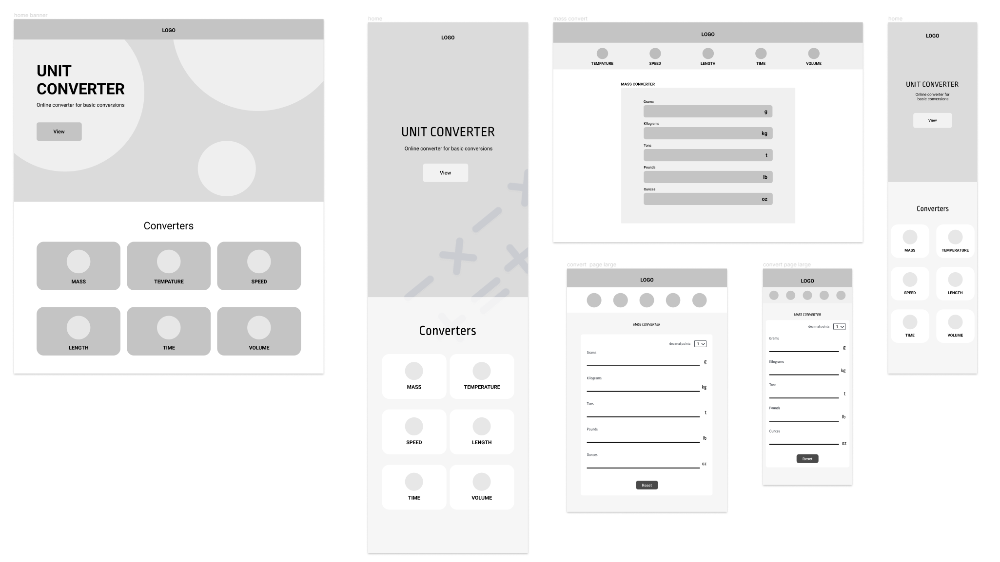

Team
Emma Souannhaphanh
Amy Van
My Role
Design Lead
Web Developer
Tools
Figma
GitHub
HTML/CSS/JavaScript
Bootstrap
Timeline
March 2022 - April 2022
OVERVIEW
Concept
This project was completed as a final group project for a web development course. EZ PZ is a unit converter developed using HTML/CSS and Javascript and made for basic and quick conversions. It has six different conversion categories and is for anyone who needs a quick and simple conversion.
WIREFRAMES / MOCKUPS
Exploring the layout
We created wire wireframes for mobile, tablet and desktop version of the website. The basic layout consisted of a home page and a page for each converter. All of the converters would be visible on the homepage. A navigation bar, containing all of the converter was placed on each converter page to allow for easy navigation
Several mockups were made to explore the different colour palettes. We settled on two colour palettes, a dark mode and a light mode which helped us with the accessibility aspect of our design.

STYLEGUIDE
Cohesive Design
Once we’ve finalised the design, I created a design spec, highlighting the design elements to help with efficiency and cohesiveness in the development phase.
KEY FEATURES

Dark mode / Light mode
The dark mode/light mode implementation takes into account user preference and reduces eye strain. The user’s preferred mode is saved using local storage and is displayed the next time they visit the website.

Auto Calculate
Once the user enters a value into one of the input fields, the other input fields will automatically be updated to increase efficiency.

Several decimal places
Dropdown menu that allows the user to pick from 9 decimal place options they would like the calculation to be displayed in.

Responsive design
Website is designed for three modes: phone, tablet and desktop, making the converter accessible on any screen size.
REFLECTION
Takeaways
Learned how to use GitHub. One of my group members introduced me to Github. I learned that it can be quite a powerful tool that helps with the efficiency and collaboration in the development stage.
Became familiar with the design to development process. Our group faced several challenges when transitioning from the design phase in tot the development. By facing those challenges, I learned what needs to be done in the design phase to help with the development phase
Solved development challenges. I had trouble implementing the dark mode/light mode. What helped me was creating a separate html file and implementing it there before doing so on our website.
Focused on accessibility. Conducting secondary research and following guidelines helped make design decisions that improved the accessibility of our website.
Next Steps
Implement user feedback. We were able to collect some user feedback but due to the time constraint of the project we did not have enough time to implement it.